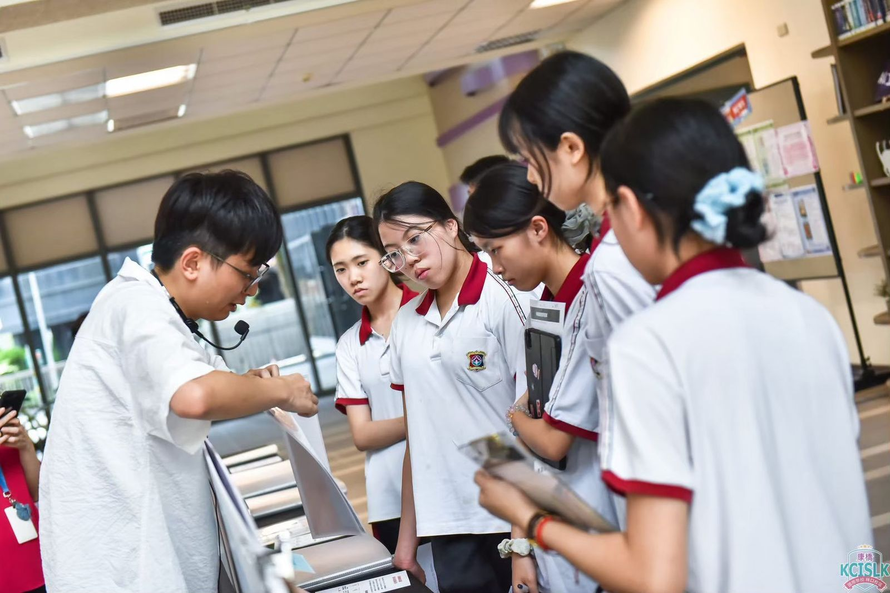

校系資料查詢
依年度、管道與條件，找出適合的校系。
| 管道 | 學校 / 校系與條件 | 操作 |
|---|---|---|
招生資料載入中，第一次開啟約需數秒… | ||
落點分析
依成績與條件，找出符合、接近與未達的校系。
入學管道
輸入成績
未填科目以 0 級分計算。十八學群探索
從學群、學類到校系，逐步認識適合的方向。
追蹤清單
把感興趣的校系留下來，隨時查看招生條件。
依年度、管道與條件，找出適合的校系。
| 管道 | 學校 / 校系與條件 | 操作 |
|---|---|---|
招生資料載入中，第一次開啟約需數秒… | ||
依成績與條件，找出符合、接近與未達的校系。
從學群、學類到校系，逐步認識適合的方向。
把感興趣的校系留下來，隨時查看招生條件。